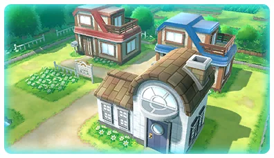
Pueblo Paleta
El pueblo donde empieza todo. Aquí viven el protagonista, su rival y el Profesor Oak, que tiene su laboratorio a las afueras.
Generación 1 · Rojo, Azul y Amarillo
Kanto es la primera región Pokémon y está inspirada en la región de Kantō, en Japón. Es una región pequeña y muy variada: tiene pueblos tranquilos, ciudades llenas de rascacielos, bosques, cuevas, una central eléctrica abandonada y varias islas al sur que solo se pueden visitar navegando.
Los primeros juegos, Pokémon Rojo y Pokémon Azul, salieron en Japón en 1996 (en España llegaron en 1999) y cuentan la historia de un niño que quiere convertirse en el mejor entrenador del mundo. Con los años Kanto ha vuelto en Amarillo, en los remakes Rojo Fuego y Verde Hoja y en Let's Go, Pikachu! y Let's Go, Eevee!, además de visitarse en Oro, Plata y Cristal.
El objetivo es doble: completar la Pokédex que te regala el Profesor Oak y conseguir las ocho medallas de gimnasio para entrar en la Liga Pokémon. Por el camino tendrás que pararle los pies al Team Rocket, que quiere usar a los Pokémon para hacerse rico.
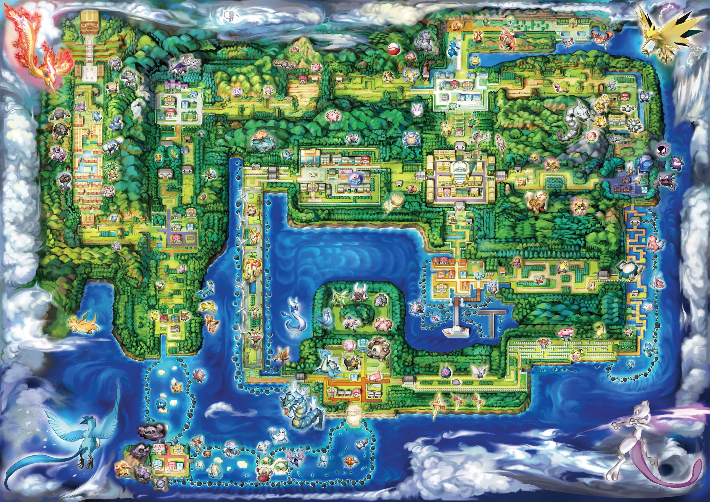

El pueblo donde empieza todo. Aquí viven el protagonista, su rival y el Profesor Oak, que tiene su laboratorio a las afueras.
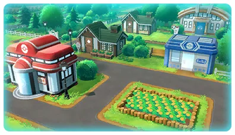
La primera ciudad del viaje. Su gimnasio está cerrado casi todo el juego… porque su líder es el jefe del Team Rocket.
Gimnasio: Tierra
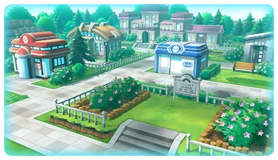
Una ciudad de piedra al pie del Monte Moon, con un Museo de Ciencias lleno de fósiles.
Gimnasio: Roca
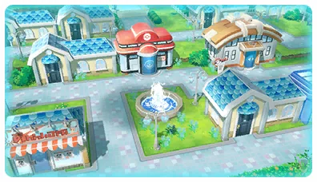
Una ciudad junto al agua. Al norte está el Puente Pepita y, cerca, la casa de Bill, el inventor del sistema de almacenamiento de Pokémon.
Gimnasio: Agua
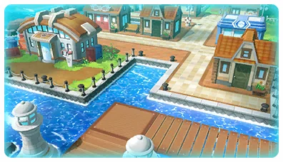
La ciudad del puerto, donde atraca el famoso barco S.S. Anne.
Gimnasio: Eléctrico
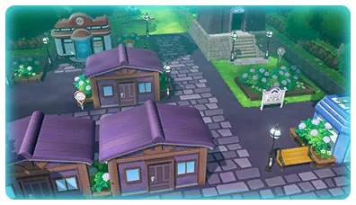
Un pueblo pequeño y triste, conocido por la Torre Pokémon, el lugar donde descansan los Pokémon que han muerto.
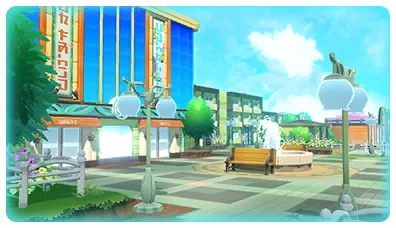
La ciudad más grande y animada, con un centro comercial enorme y un casino que esconde la guarida del Team Rocket.
Gimnasio: Planta
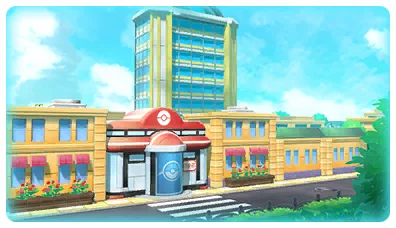
La gran ciudad del centro de Kanto. Aquí está Silph S.A., la empresa que fabrica las Poké Balls, y un dojo de kárate.
Gimnasio: Psíquico
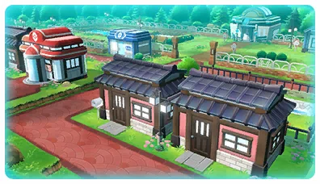
Al sur de la región. Tiene la Zona Safari, donde se capturan Pokémon raros, y un gimnasio lleno de paredes invisibles.
Gimnasio: Veneno
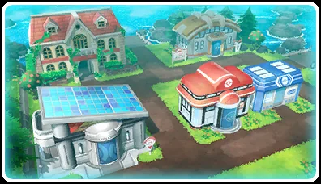
Una isla volcánica con un laboratorio que revive fósiles y la Mansión Pokémon, donde se creó a Mewtwo.
Gimnasio: Fuego
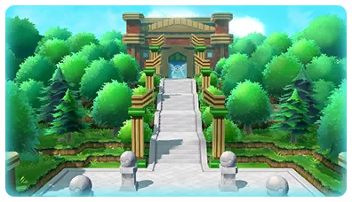
La sede de la Liga Pokémon. Solo pueden entrar los entrenadores con las ocho medallas.
Pulsa en un Pokémon para verlo en grande.
Hielo Volador
Uno de los tres pájaros legendarios. Vive en lo más profundo de las Islas Espuma.
Eléctrico Volador
El pájaro del rayo. Se esconde en la Central Energía abandonada.
Fuego Volador
El pájaro de fuego. En Rojo y Azul aparece en la Calle Victoria.
Psíquico
Un Pokémon creado por científicos a partir del ADN de Mew. Escapó del laboratorio y se esconde en la Cueva Celeste.
Psíquico
Un Pokémon misterioso que tiene el ADN de todos los Pokémon. Solo se podía conseguir en eventos.
El Team Rocket es una organización criminal que roba Pokémon raros para venderlos y usarlos en sus negocios. Sus soldados visten de negro con una gran R roja en el pecho y aparecen por toda la región.
En Amarillo y en Let's Go también aparecen Jessie y James, la famosa pareja del Team Rocket de la serie de televisión.
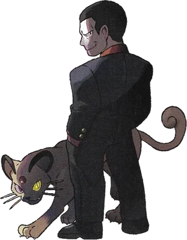
Jefe del Team Rocket
Un hombre frío y poderoso que siempre va acompañado de su Persian. Lo que nadie sabe es que también es el líder del gimnasio de Ciudad Verde.
Para entrar en la Liga hay que ganar las ocho medallas. Este es el orden normal del viaje.
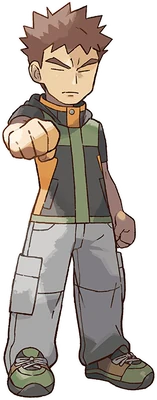
Ciudad Plateada
Roca · Medalla Roca
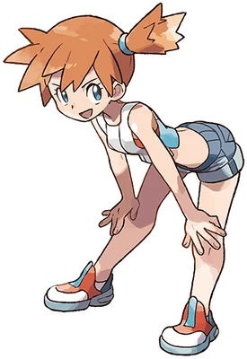
Ciudad Celeste
Agua · Medalla Cascada
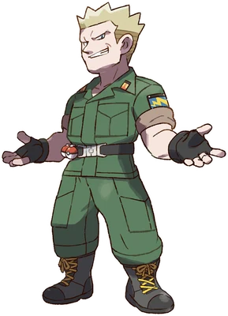
Ciudad Carmín
Eléctrico · Medalla Trueno
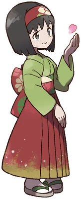
Ciudad Azulona
Planta · Medalla Arcoíris
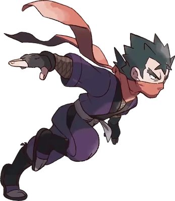
Ciudad Fucsia
Veneno · Medalla Alma
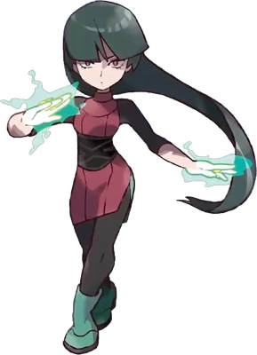
Ciudad Azafrán
Psíquico · Medalla Pantano
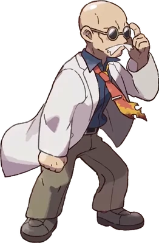
Isla Canela
Fuego · Medalla Volcán
Ciudad Verde
Tierra · Medalla Tierra
En la Meseta Añil te esperan los cuatro miembros del Alto Mando, uno detrás de otro y sin poder salir. Si los vences a todos, te enfrentas al Campeón.
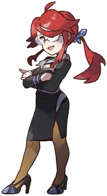
Alto Mando
Hielo
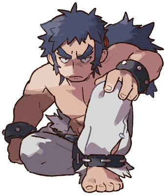
Alto Mando
Lucha
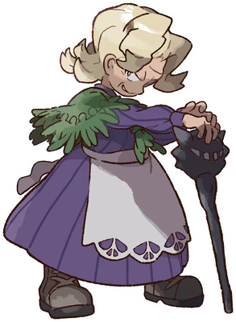
Alto Mando
Fantasma
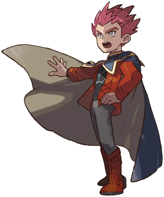
Alto Mando
Dragón
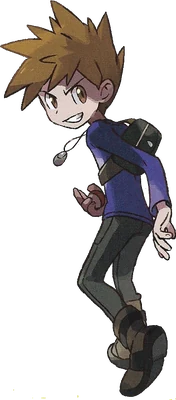
Campeón
Tu rival llega a la Liga antes que tú y se convierte en Campeón. Su equipo depende del inicial que elegiste.
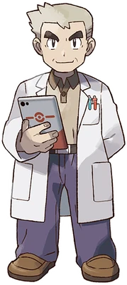
El profesor Pokémon más famoso. Te regala tu primer Pokémon y una Pokédex, y te pide que la completes.
El nieto del Profesor Oak y tu rival. Elige el inicial que tiene ventaja sobre el tuyo y aparece una y otra vez durante el viaje. Al final se convierte en el Campeón de la Liga, justo antes que tú.
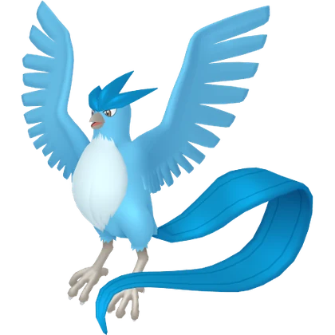
Articuno
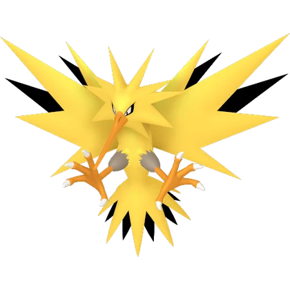
Zapdos
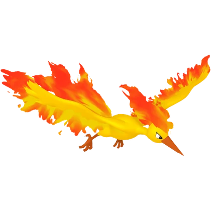
Moltres
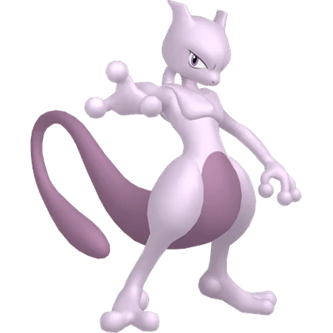
Mewtwo
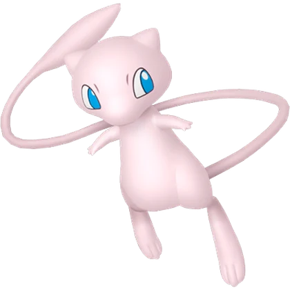
Mew
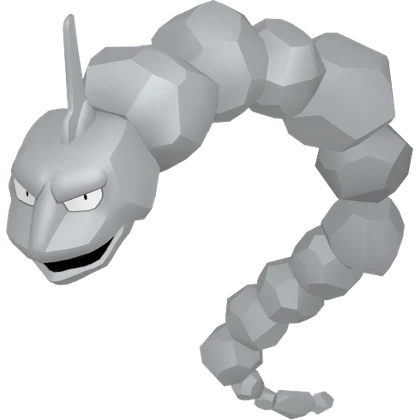
Onix
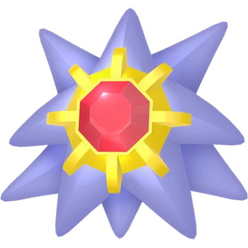
Starmie
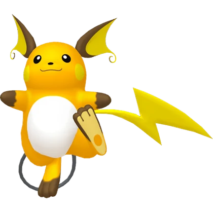
Raichu
Vileplume
Weezing
Alakazam
Arcanine
Rhydon
Lapras
Machamp
Gengar
Dragonite